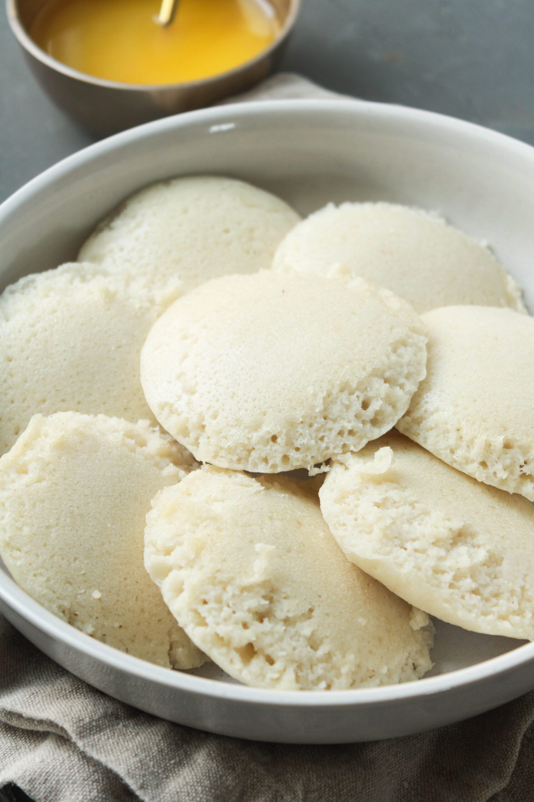

⏳ 30 mins
🍽️ Serves: 3-4
🌶️ None
🥦 Vegetarian
Ingredients
- 2 cups rice
- 1 cup urad dal (black gram)
- 1/2 tsp fenugreek seeds
- Salt to taste
- Water as needed
Steps
- Soak rice and urad dal separately for 6-8 hours.
- Grind both to a smooth batter, mix well, and ferment overnight.
- Add salt to the fermented batter.
- Grease idli molds and pour the batter.
- Steam in an idli cooker for 10-12 minutes.
- Let cool slightly, then remove and serve with chutney and sambar.
FAQs
What if my idlis are hard?
Ensure proper fermentation and do not over-steam.
Can I make idlis without an idli cooker?
Yes! Use a steamer or a pressure cooker without the whistle.